The director was replaced. The Ewoks were a toy decision. Lucas essentially directed it himself. A villain got a redemption arc nobody saw coming. A bounty hunter beloved by millions died in under thirty seconds, killed by a blind man. The machine that started in a Tunisia sandstorm ended in a forest on a moon.
▶ Watch the 1983 Theatrical TrailerEmpire had ended without resolution. Han was frozen. Luke had learned something that changed everything. The audience had waited three years with no internet, no leaks, and no way to rewatch it. Return of the Jedi was the most anticipated film in history before a frame was shot. That pressure shaped every decision made during its production.
The film was announced and marketed for nearly a year as Revenge of the Jedi. Promotional posters were printed. Convention materials were distributed. Lucas changed the title in 1982 after deciding that a Jedi would not seek revenge — revenge is a Sith concept. The Revenge posters became instant collectibles. Several crew members kept their working copies. The title change is one of the more quietly revealing moments of Lucas thinking carefully about what the Force actually means.
Lucas approached David Lynch, who declined. He approached David Cronenberg, who declined. He considered directing it himself, then chose Richard Marquand — a British director known for Eye of the Needle — reportedly because Marquand was sufficiently deferential to work under Lucas's supervision. Multiple cast and crew members have stated on record that Lucas directed the majority of the film, particularly all actor scenes. Marquand operated a camera on several sequences. He received the director's credit. Lucas received a producer credit. The actual division of labor has never been formally documented.
Lawrence Kasdan, co-writer of Empire and the screenwriter of Jedi, argued in story conferences that Han Solo should die at the end of the film. He felt a death would give the ending genuine weight and prevent the resolution from feeling entirely consequence-free. Lucas refused, citing merchandise: a dead Han Solo couldn't anchor future stories or sell product. Ford has confirmed he also wanted Han killed. The story conferences, partially recorded and later released, are among the most candid documents of the commercial pressures on the original trilogy.
The original plan had the forest moon of Endor defended by Wookiees — a callback to Chewbacca's home planet that had been part of the mythology since the first film. Lucas changed this to Ewoks for reasons that have never been fully explained on record. The leading theory, supported by the merchandising that followed, is that small, cute, child-friendly creatures were more commercially viable than large bipedal aliens. Wookiees had already been associated with the Star Wars Holiday Special — a production so disavowed that Lucas allegedly wanted all copies destroyed.
Principal photography began January 11, 1982 at Elstree Studios and at Crescent City, California for the Endor sequences. The production ran under a code name — "Blue Harvest: Horror Beyond Imagination" — to prevent location leaks. Crew wore Blue Harvest t-shirts. Local press reported on an obscure horror film being made in the redwoods. Nobody was fooled for long.
Lucasfilm registered a dummy production company and gave the film a fake name, a fake genre, and a fake poster. Crew received badges identifying them as "Blue Harvest" employees. The fake tagline was "Horror Beyond Imagination." Catering trucks were labeled with the fake title. The ruse kept location fees manageable and reporters at a distance — for a few weeks. When the scale of the operation in the Humboldt County redwoods became apparent, the cover collapsed. The fake production materials are now collector's items.
The Endor forest sequences were shot in the redwood groves of Humboldt County and Smith River, California. The ancient redwoods provided a sense of scale that no set could replicate — trees 300 feet tall dwarfing the Ewok village structures built among them. The speeder bike chase sequence was achieved by strapping a Steadicam to a camera operator and running through the forest at low speed, then dramatically overcranking the playback. The resulting footage, processed through optical printing, became one of the most kinetically exciting sequences in the trilogy.
The Emperor's throne room was built at Elstree at 300 feet long with a 50-foot ceiling — the largest set constructed for any film in the original trilogy. The final confrontation between Luke, Vader, and the Emperor was filmed over eight days. Ian McDiarmid, in full Emperor makeup, sat for four hours in the makeup chair each morning. Hamill and the stunt performers worked through the lightsaber choreography in the weeks before shooting. The vertical reactor shaft was a separate set, shot with a stunt performer on wires against matte paintings.
The Jabba the Hutt puppet required a team of five puppeteers operating from inside and around the structure, which weighed over two tons and sat on a hydraulic platform allowing limited movement. The Rancor monster in the pit sequence was a combination of a large mechanical puppet and a man in a suit filmed against separately scaled sets. The Sarlacc pit was built in the Arizona desert at Yuma, with practical sand dunes dressed around a constructed pit set. The 48-hour shoot in Arizona was conducted at temperatures exceeding 110°F.
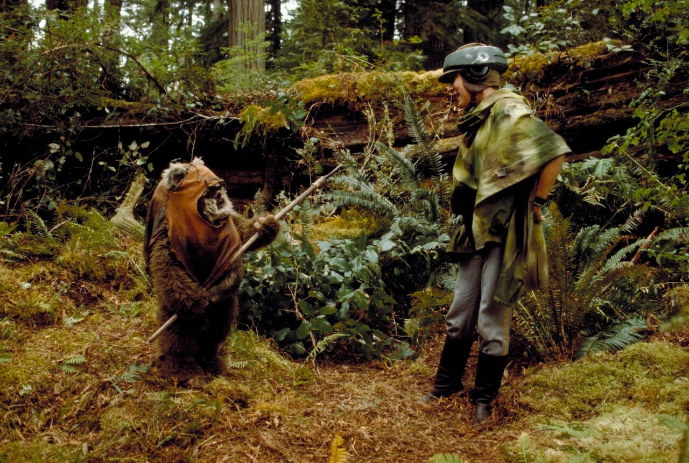
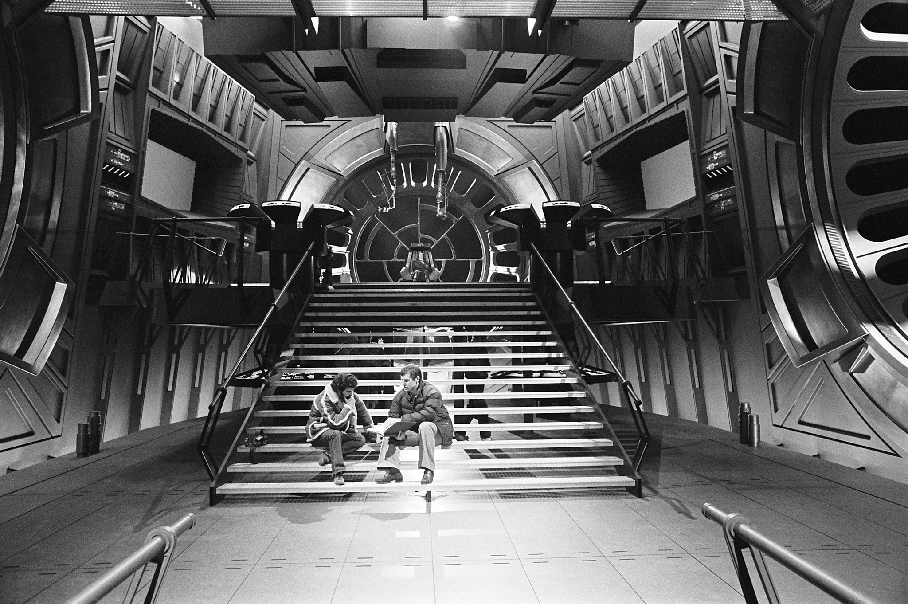
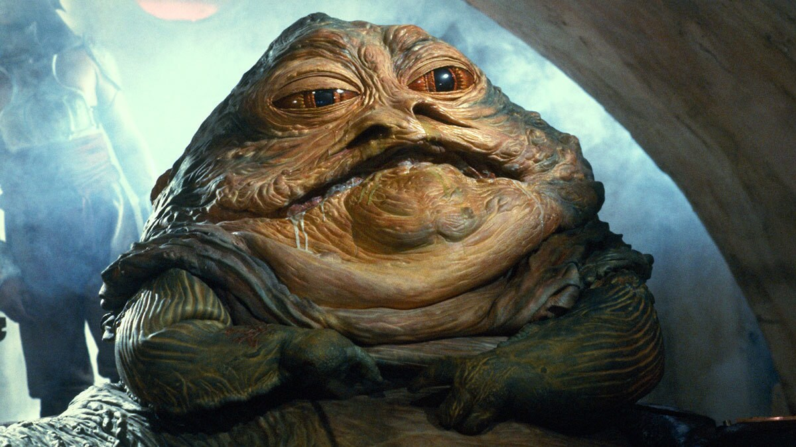
Return of the Jedi is a film in three movements: the Jabba's palace rescue, the Endor campaign, and the throne room. The first is the most fun. The second is the most divisive. The third is the most important. The whole enterprise is messier than Empire and more complete than anyone gives it credit for — because the messiness is inseparable from the machine that produced it.
In A New Hope, Darth Vader is a force of pure menace with no interiority. In Empire he becomes a father. In Jedi he becomes a man. The redemption arc — watching Vader choose his son over the Emperor — works because it was built over three films without ever being explicitly telegraphed. Hamill plays Luke's absolute certainty that his father can be saved as genuine faith rather than naivety, and the film validates it completely. The unmasking scene, with Sebastian Shaw as the dying Anakin, is one of the quietest and most effective moments in the entire series.
Ian McDiarmid was 37 years old when cast as the Emperor — playing a character meant to read as ancient and corrupted. The prosthetic makeup took four hours each morning and left him unable to eat solid food on set. His performance — all quiet menace and theatrical cruelty — anchors the throne room scenes in something that feels genuinely dangerous. McDiarmid has said the character's pleasure at Luke's suffering was the most useful thing he found to play. The Emperor is not afraid of anything in those scenes. That's what makes the eventual pivot so forceful.
Boba Fett debuted in the 1978 Star Wars Holiday Special, appeared briefly in The Empire Strikes Back with fewer than 30 words of dialogue, and became one of the most obsessively mythologized characters in the history of the franchise — a bounty hunter of mysterious origin, lethal reputation, and iconic armor. Then Return of the Jedi arrived. Han Solo, still partially blind from carbonite exposure, is handed a stick and accidentally backs into Fett's jet pack, activating it uncontrollably. Fett pinwheels across the sky and falls, screaming, into the Sarlacc pit. The creature, which takes a thousand years to digest its prey, begins its work. That is the exit. Thirty seconds. A stick. And decades of fan fiction trying to explain it away.
"Leia, I am your brother." The scene between Luke and Leia in the Endor forest — where Luke reveals their relationship and his plan to surrender to Vader — is the film's emotional center and its quietest achievement. Fisher plays the moment with complete simplicity. There is no dramatic musical sting. The scene confirms that the Force runs through both of them, and that Luke's faith in Vader is inseparable from his understanding of himself. Kasdan wrote this scene late in the drafting process. It is the moment where the trilogy's personal stakes become fully legible.
Jedi ends with the Death Star destroyed, the Emperor dead, Vader redeemed and burned on a pyre, the Rebellion victorious, Han and Leia together, and Luke alone with three Force ghosts at the edge of the celebration — present but separate. Critics at the time found the resolution too clean, the Ewok victory too convenient, the celebration too long. These criticisms are accurate. They are also beside the point. The film closes a loop that began in 1977 with a kid watching two suns set. That it closes it with sincerity rather than irony is precisely what makes it work.
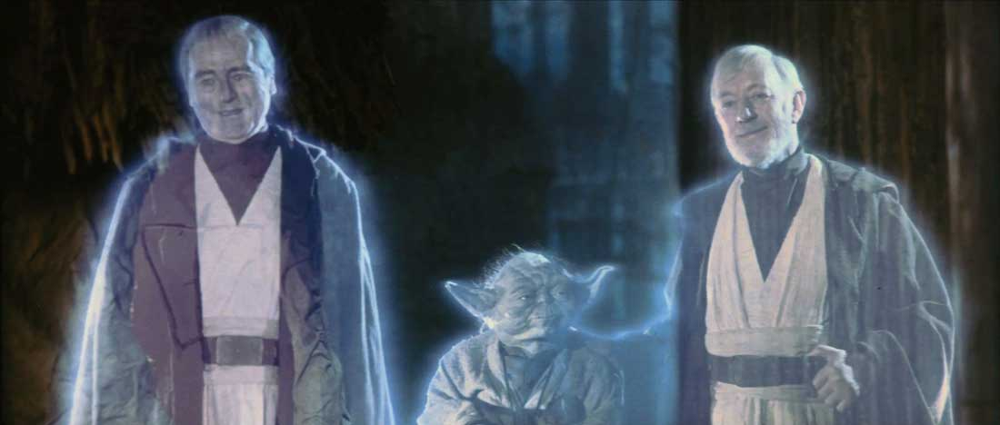
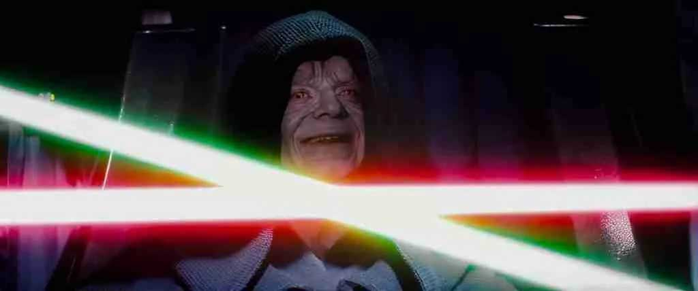
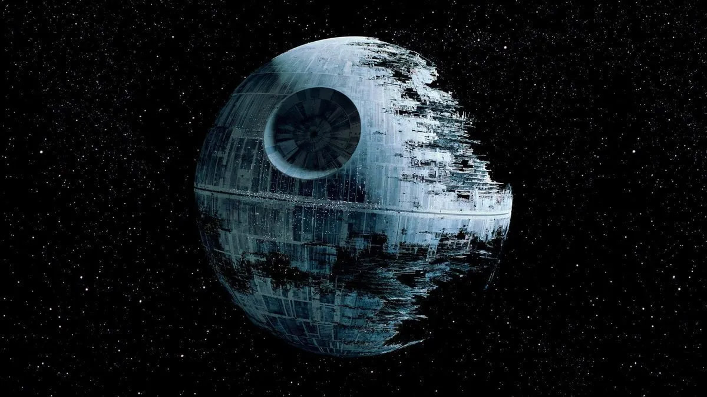
No element of the original trilogy has generated more sustained controversy than the Ewoks. No element was more commercially successful per minute of screen time. These are not contradictions — they are the same thing viewed from different angles.
Warwick Davis was cast as Wicket the Ewok at age 11, stepping in after the original performer became ill. He had no professional acting experience. His performance — communicating emotion entirely through body language and head tilts under a full puppet head — caught Marquand and Lucas's attention enough to give him more screen time. Davis went on to play Willow, Filius Flitwick in Harry Potter, and Griphook, and became one of the most consistently employed short-statured actors in the history of cinema. It started because another Ewok got sick.
The backlash to the Ewoks was the first significant moment when critics and audiences articulated what they perceived as a commercial compromise in the Star Wars mythology. Pauline Kael wrote that the Ewoks felt "engineered for the toy store." The New York Times noted the demographic calculation in every frame of the Endor sequences. These were not wrong observations. What they missed was that the Ewoks work emotionally within the film — their victory over the Empire is preposterous and the film knows it, which is part of why Vader's quiet choice in the throne room hits so hard by contrast.
Lucasfilm produced two Ewok television movies: Caravan of Courage: An Ewok Adventure (1984) and Ewoks: The Battle for Endor (1985). Both were made for ABC, both featured child protagonists, and neither had any connection to the main cast. Caravan of Courage won an Emmy for Outstanding Special Visual Effects. Battle for Endor was darker in tone, killing off several characters in its opening minutes. Both films are almost entirely unknown outside of children who watched ABC in the mid-1980s. Warwick Davis reprised Wicket in both.
I wanted a bunch of primitive little guys who defeat the Empire. The ewoks were the point.
— George Lucas · On the Ewoks · 1983
Return of the Jedi is the film where the machine that Star Wars built became fully visible. The toy decisions, the franchise logic, the commercial calculations — all of it surfaces in 1983 in a way it hadn't before. The film survives this because its emotional core is genuine. But Jedi is also the beginning of something: the franchise eating itself. What came next took decades to arrive and several billion dollars to produce.
After Jedi, Lucas publicly stated the saga was complete and he had no plans to continue it. He spent the intervening years on the Special Editions, the Indiana Jones franchise, and Lucasfilm's other divisions. The Phantom Menace arrived in 1999 — sixteen years later — with a level of cultural anticipation that has not been matched before or since. The prequels are their own complicated story. What matters here is that Jedi was, for a generation, genuinely believed to be the end. That belief is part of what makes it feel like a conclusion rather than a chapter.
The original trilogy established the commercial grammar that the entire entertainment industry still speaks: a self-contained story told across multiple installments, each with its own tone and visual identity, building to a culminating emotional event, wrapped in a merchandise ecosystem that outlasts the films themselves. The MCU, the DC universe, the Harry Potter franchise, the Fast and Furious series — all of them are operating on the logic Lucas assembled between 1977 and 1983. Return of the Jedi is where that logic became fully institutionalized.
When Disney acquired Lucasfilm in 2012, the intellectual property being purchased included every character, world, vehicle, and story element introduced across the original trilogy — from Luke's binary sunset to Boba Fett's armor to the Ewok Village playset. Lucas had insisted on owning all of it since 1973. The deal that Fox executives thought was generous turned out to be worth $4.05 billion. Disney has since produced seven additional Star Wars films and multiple television series on that foundation. The original trilogy remains the center of gravity for all of it.
Jedi's reputation bottomed out in the 1990s — a period when Empire was being canonized as the definitive Star Wars film and Jedi was being retroactively reframed as the beginning of the end. The prequel era and the sequel trilogy gave it new context. Relative to what came after, Jedi's emotional coherence, its commitment to completing its characters' arcs, and its willingness to let Vader's redemption be the actual point — not a twist, not a reversal, just the thing that was true all along — look considerably more accomplished than they did in 1983.
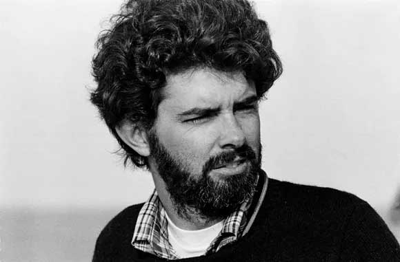
Produced and, by most accounts, directed the majority of the film. Closed the story he had been building since 1977. Sold Lucasfilm to Disney for $4.05 billion in 2012.
Wikipedia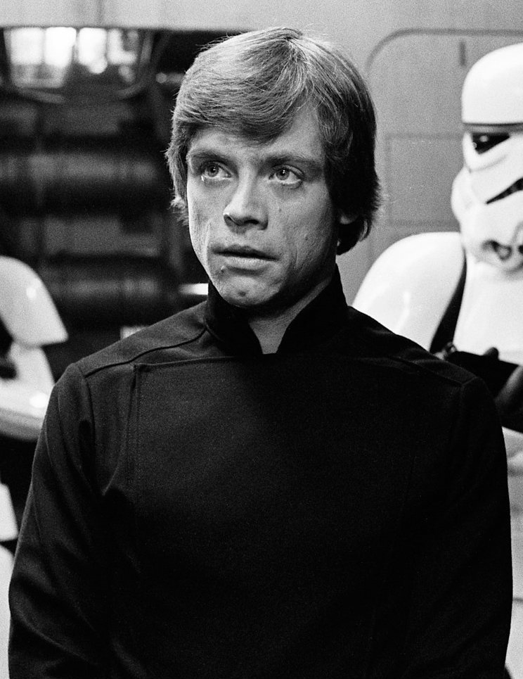
His throne room performance — Luke's refusal to kill Vader, his surrender, his certainty his father can be saved — is the finest work he did in the original trilogy.
Wikipedia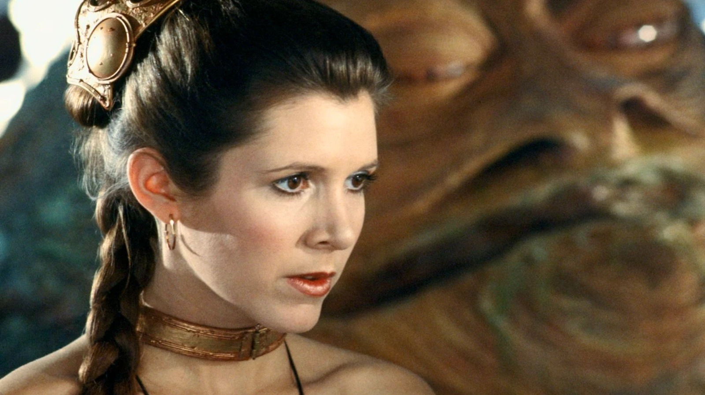
Her scene with Hamill in the Endor forest, where Leia learns the truth of their relationship, is the film's quietest and most affecting moment. The bikini became its own cultural chapter.
Wikipedia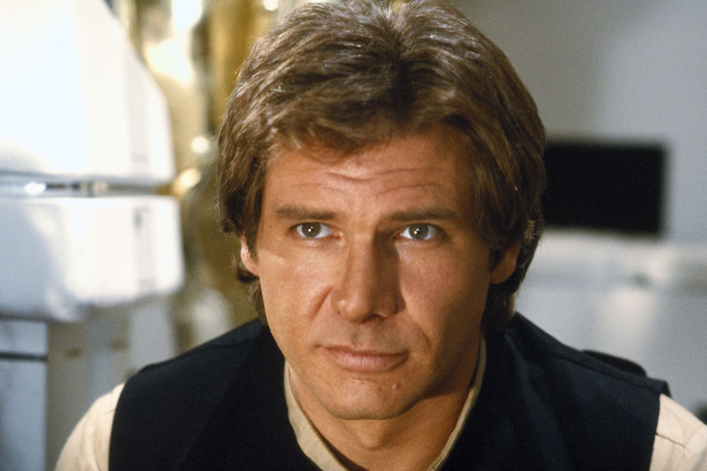
Wanted Han killed. Was overruled. Accidentally killed Boba Fett with a stick while blind. Delivered a performance that feels like a man going through the motions — which, given the circumstances, fits.
Wikipedia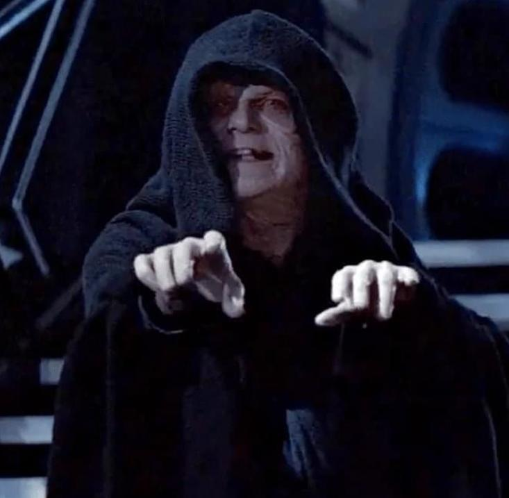
Was 37. Spent four hours in makeup daily. Could not eat solid food on set. Played ancient corrupted power with complete conviction. Has never really stopped being the Emperor.
Wikipedia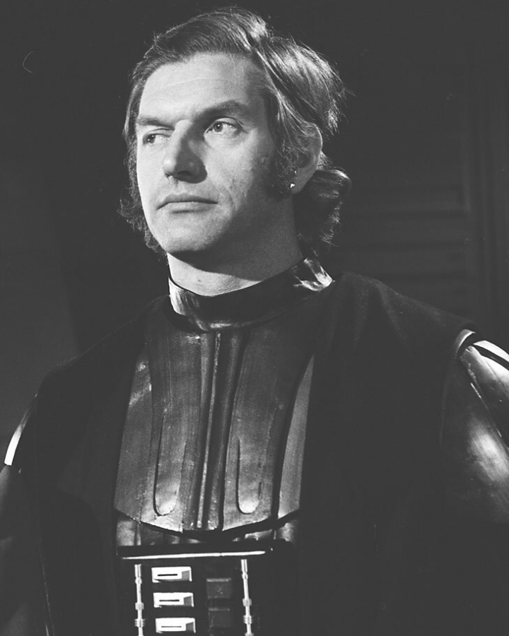
Performed Vader's physical presence across all three films. Was barred from the Jedi premiere for revealing plot details. Did not know Sebastian Shaw would play Anakin's face until he saw the film.
Wikipedia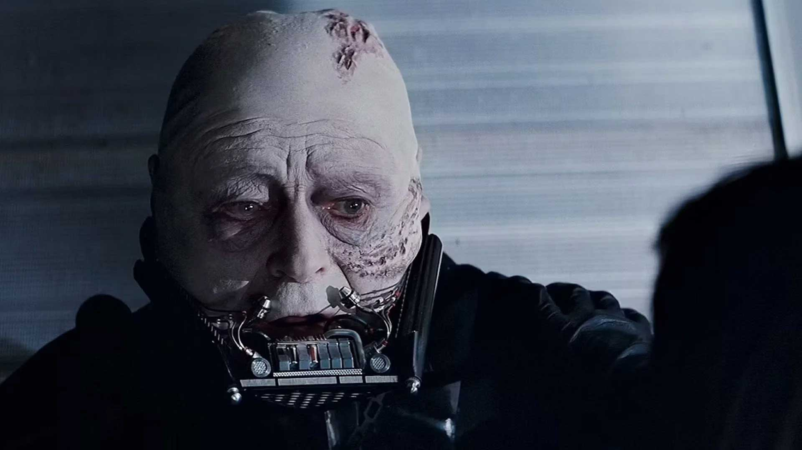
Appeared in a single scene. Made the unmasking of Vader quietly devastating. Was replaced in the 2004 DVD re-release by Hayden Christensen and has never been reinstated.
Wikipedia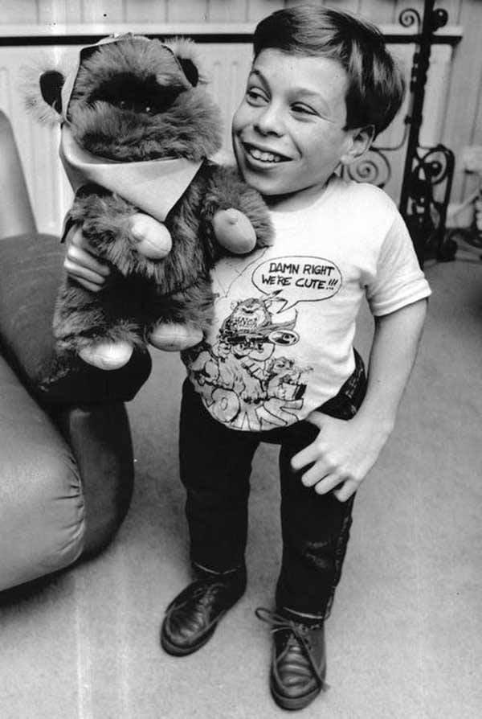
Was 11. A last-minute replacement. Communicated more through a sealed puppet head than most actors manage with their full face. Launched a sustained career from a bear suit in the California redwoods.
Wikipedia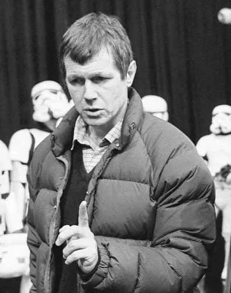
Received the director's credit. Lucas was present on set for most of production. The actual creative division of labor was never formally documented. Marquand died in 1987 at 49.
Wikipedia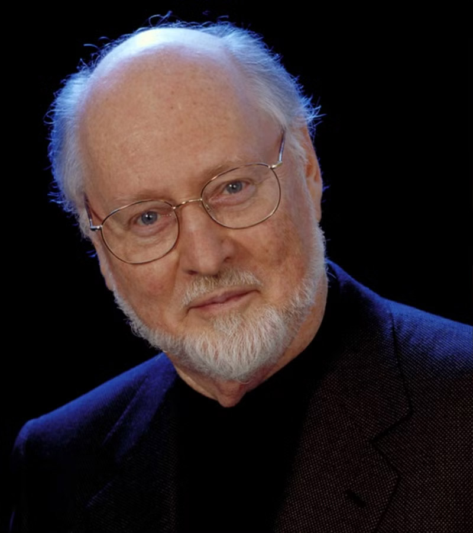
Completed the trilogy's musical architecture — introducing the Emperor's theme, Ewok Celebration, and the end titles. His score tracks the film exactly: warmer, more resolved, and deliberately less dark than Empire.
WikipediaBetween May 1977 and May 1983, George Lucas made three films that permanently reorganized the economics of Hollywood, the grammar of blockbuster cinema, and the expectations of an entire generation of audiences. He did it by refusing to give the studio his rights, by hiring directors who would let him work the way he wanted, by building a visual effects company from a warehouse in Van Nuys, and by writing a story so structurally ancient that it worked across every language and culture it reached.
The trilogy is not perfect. Empire is the best film. Jedi is the most commercial. A New Hope is the one that started everything on a desert planet nobody believed in. Together they are the most influential three films in the history of popular cinema. Everything else — the prequels, the sequels, the Disney era, the television series, the $4 billion acquisition — is a response to what happened between 1977 and 1983 in Tunisia, Norway, a California redwood forest, and a warehouse full of model spaceships.
Sixteen years later the machine would start again. I have a bad feeling about this.
The production, release, and cultural legacy of the 1983 film — the Ewoks, the exit, the redemption, and the end of the original trilogy.